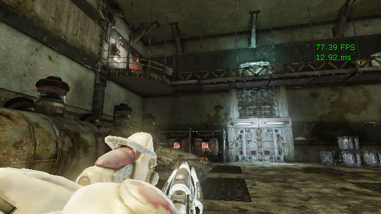

UDN
Search public documentation:
StatsDescriptions
日本語訳
中国翻译
한국어
Interested in the Unreal Engine?
Visit the Unreal Technology site.
Looking for jobs and company info?
Check out the Epic games site.
Questions about support via UDN?
Contact the UDN Staff
中国翻译
한국어
Interested in the Unreal Engine?
Visit the Unreal Technology site.
Looking for jobs and company info?
Check out the Epic games site.
Questions about support via UDN?
Contact the UDN Staff
UE3 Home > Performance, Profiling, & Optimization > Stat Command Descriptions
Stat Command Descriptions
- Stat Command Descriptions
- Overview
- Executing STAT Commands
- Stat Types
- Standalone Stats
- Stat Groups
- STAT ANIM
- STAT ASYNCIO
- STAT AUDIO
- STAT BEAMPARTICLES
- STAT CANVAS
- STAT COLLISION
- STAT CROWD
- STAT D3D11RHI
- STAT D3D9RHI
- STAT DECALS
- STAT DLE
- STAT ENGINE
- STAT FACEFX
- STAT FLUIDS
- STAT GAME
- STAT GFX
- STAT INITVIEWS
- STAT INSTANCING
- STAT MEMORY
- STAT XBOXMEMORY
- STAT MEMORYCHURN
- STAT MEMORYSTATICMESH
- STAT MESHPARTICLES
- STAT MORPH
- STAT NAVMESH
- STAT NET
- STAT OBJECT
- STAT OCTREE
- STAT PARTICLEMEM
- STAT PARTICLES
- STAT PATHFINDING
- STAT PEER
- STAT PHYSICS
- STAT PHYSICSCLOTH
- STAT PHYSICSFIELDS
- STAT PHYSICSFLUID
- STAT SCENERENDERING
- STAT SCENEUPDATE
- STAT SHADERCOMPILING
- STAT SHADERCOMPRESSION
- STAT SHADOWRENDERING
- STAT STATSYSTEM
- STAT STREAMING
- STAT STREAMINGDETAILS
- STAT TEXTUREPOOL
- STAT THREADING
- STAT TRAILPARTICLES
- Stat Options
Overview
When debugging, testing, or profiling games, the ability to quickly and easily see and evaluate meaningful data directly in the game is imperative. Through the use of theSTAT console command, Unreal Engine 3 provides the ability to view any number of statsistics about various aspects of the game and engine as data rendered to the screen as a heads-up display. The STAT command takes one parameter, which determines which groups of stats are displayed on the scree. This document contains a breakdown of the various stat commands supported by the engine.
Executing STAT Commands
STAT commands are executed just like any other console command. They can be entered directly into the in-game console or issued from Kismet using the Console Command action.
The syntax for a STAT command is:
stat <command>
In-Editor Stat Viewing
Statistics can also be viewed directly in the viewports within Unreal Editor. To view stats in an editor viewport, the Show Stats option must first be enabled in the Viewport Options drop down menu of the Viewport Toolbar. In addition to theShow Stats option being enabled, the viewport must have Realtime Update enabled as well. Once those are enabled, the STAT commands can be entered into the console box of the status bar of the editor using the same syntax that would be used to enter a command into the in-game console (shown above).
Stat Types
There are several types of stats that can be used to track information and display it. Each of these types of stats are displayed in their own way to present the data they hold. These are explained below.Cycle Counter Stat
Cycle Counter stats keep track of the time it takes to perform a task. This type of stat is displayed with three columns of data:- CallCount - Number of times the task being tracked was executed.
- IncAvg - Average time it takes to perform the task.
- IncMax - Maximum time taken to perform the task.
Memory Counter Stat
Memory Counter stats are counters that keep track of, and have special handling for, memory usage. This type of stat is displayed with three columns of data:- MemUsedAvg - Average amount of memory used for this aspect.
- MemUsedMax - Maximum amount of memory used for this aspect.
- % of Total - Percentage of the total memory being used by this aspect.
Accumulator Stat
Accumulator stats are simple values that can be incremented or decremented that do not keep track of history and do not zero out each frame. This type of stat displays a single column of data:- Average - The value of the stats.
Counter Stat
Counter stats are simple values that can be incremented or decremented that also keep track of history and are zeroed out each frame. This type of stat displays a single column of data:- Average - The value of the stats.
Standalone Stats
TheseSTAT commands display standalone statistics.
STAT FPS
TheSTAT FPS command displays the current number of frames being rendered per second and the amount of time taken to render the frame in milliseconds (ms).

FPS Color Coding
The fps stats are drawn in one of three colors depending on the value. The colors are:- Green - value >= 29.5. FPS is in an acceptable range.
- Yellow - 20.0 < value < 29.5. FPS is approaching a problematic range and should be monitored.
- Red - value < 20.0. FPS is very low and attention is required.
STAT LEVELS
TheSTAT LEVELS command displays a list of currently active levels and displays their status through color coding. Streaming levels are grouped under the persistant level. The number of seconds next to the level name is the time it took from load request to load finish.
Levels Color Coding
- Red - Level is loaded and visible.
- Orange - Level is in the process of being made visible.
- Yellow - Level is loaded but not visible.
- Blue - Level is unloaded but still resident in memory, will be cleaned up when garbage collection occurs.
- Green - Level is unloaded.
- Purple - Level is preloading.
STAT UNIT
TheSTAT UNIT command displays the time spent for the current frame on the CPU, the time spent in the game thread, the time spent in the render thread, and the time spent for the current frame on the GPU.
Note: The GPU frame time is only displayed if it is greater than 0.
Unit Color Coding
The unit stat times are drawn in one of three colors depending on the value. The colors are:- Green - value < 34.0. Value is in an acceptable range.
- Yellow - 34.0 < value < 50.0. Value is approaching a problematic range and should be monitored.
- Red - value > 50.0. Value is very high and attention is required.
STAT UNITGRAPH
TheSTAT UNITGRAPH command displays an in-game frame time graph which consists of a live scrolling graph that displays frame timing data as you test your game.
This is great tool for getting a quick overview of the game's current performance, and helps you easily see whether a section of your game is bound by game-thread, render-thread or GPU performance.
The vertical axis is frame time and the horizontal axis is the frame number. There is also a horizontal alert line at the 30 FPS mark. Any slow samples above the alert line will flash on the graph to draw your attention!
The line colors match the the labels for the STAT UNIT times that are shown in the top right of the screen.
- Green - Frame time
- Red - Game thread
- Blue - Render thread
- Yellow - GPU time
STAT UNIT times). That is, the times are a running average over about 10 frames. If you prefer to look at unfiltered data, you can type STAT RAW to graph the frame times directly. Unfiltered frame times has it's uses, but generally make it harder to visualize what's going on when you're trying to play the game while profiling.
Stat Groups
TheseSTAT commands display groups of related statistics. Multiple stat commands can be issued on top of one another to display multiple groups of stats at the same time.
STAT ANIM
TheSTAT ANIM command displays statistics for the animation system.
- SkelComp Tick Time - Time taken to tick SkeletalMeshComponents
- Anim Tick Time - Time taken to tick SkeletalMeshComponents' Animations/Skeletal Controls
- Sync Groups - Time taken to update Sync Group
- Tick Skel Controls - Time taken to tick SkeletalMeshComponents' Skeletal Control
- UpdateSkelPose - Time taken to update SkeletalMeshComponent Pose (It updates all transform information for bones from other inputs - i.e. animations/skeletal controls)
- Get Bone Atoms - Time taken to extract/blend all bone transform from animations
- Mirror BoneAtoms - Time taken to mirror source bones to destination bones
- Anim Decompression - Time taken to get animation pose either decompressed from compressed data or raw.
- UpdateFaceFX - Time taken to update FaceFX
- Compose Skeleton - Time taken to convert Local Space bone transforms to Compose Space bone transforms by multiplying transforms of parents hierarchically.
- SkelControl - Time taken to calculate bone transforms for all active Skeletal Controls
- Update RBBones - Time taken to apply animation pose to physics body
- SkelComp UpdateTransform - Time taken to update transform
- BlenInPhysics - Time taken to blend physics and animation based on weights
- MeshObjectUpdate - Time taken to update all transform information for render thread to skin
- Update SkelMesh Bounds - Time taken to update SkeletalMeshComponent bounds
- SkelComp UpdateChildComponents - Time taken to update all child components attached.
STAT ASYNCIO
TheSTAT ASYNCIO command displays statistics for asynchronous loading of data from disk.
- Fulfilled Read Size - The amount of data loaded through successful requests.
- Canceled Read Size - The amount of data contained in canceled requests.
- Outstanding Read Size - The amount of data still remaining to be loaded in pending requests.
- Uncompressor Wait Time - The amount of time spent decompressing loaded data this frame.
- Uncompressor Total Time - The overall amount of time spent decompressing data.
- Main Thread Block Time - The amount of time spent waiting for data to be seriealized from an archive.
- Async Package Precache Wait Time -
- Platform Read Time - The amount of time it takes to load data.
- Fulfilled Read Count - Number of requests resulting in successfully loading data.
- Canceled Read Count - Number of requests canceled.
- Outstanding Read Count - Number of requests remaining to be loaded.
- Bandwidth (MByte/sec) - The speed at which the data is being loaded.
STAT AUDIO
TheSTAT AUDIO command displays statistics for the audio system, including memory used, time spent updating sounds, number of sounds playing, etc.
- Audio Update Time - Updating all things audio (overall time taken in AudioDevice::Update).
- Gathering WaveInstances - Collecting, sorting and prioritizing all potential audio sources.
- Processing Sources - Starting and/or updating any audio sources that have a high enough priority to play
- Submit Buffers - Submitting audio buffers to the system.
- Source Create - Creating new sound sources.
- Source Init - Initialization of all sound sources.
- Buffer Creation - Creation of a sound asset (e.g. Upload of PCM data to OpenAL).
- Updating Sources - Updating the sound sources (position, velocity, volume, pitch, etc.).
- Updating Effects - Applying audio effects (reverb, LPF, EQ).
- Prepare Vorbis Decompression - Initializing the vorbis stream for decompression.
- Decompress Audio - Decompressing all compressed audio formats (currently, only vorbis).
- Prepare Audio Decompression - Initializing of sound decompression in general (currently, only vorbis data).
- Decompress Vorbis - Decompressing vorbis data.
- Audio Memory Used - Total memory used for all sound assets. Does not include any workspace or internal buffers.
- Audio Buffer Time - Total time of stored sound data in seconds.
- Audio Buffer Time (w/ Channels) - Total time of stored sound data channels in seconds. Each channel of a multi-channel sound is added up to get this value.
- Audio Components - Total active sounds being maintained for processing (ambient sounds all over the map, player sounds etc).
- Audio Sources - Total audio components that are audible and high enough priority to hear.
- Wave Instances - Total sound waves being processed.
- Wave Instances Dropped - Total sounds not allocated to a sound source (as they are inaudible).
- Audible Wave Instances Dropped - Total sounds not being played but were audible.
- Finished Delegates Called - Total times an audio component was stopped, causing the
OnAudioFinisheddelegate to be called. - CPU Decompressed Wave Instances - Total audio sources that are decompressing a Vorbis sound on the fly.
STAT BEAMPARTICLES
TheSTAT BEAMPARTICLES command shows statistics specific to particle system containing emitters using a beam typedata module.
- Beam FillIndex Time - Filling the index data for rendering beam emitters.
- Beam FillVertex Time - Filling the vertex data for rendering beam emitters.
- Beam Ptcl Render Calls - Total beam emitter instances rendered that frame.
- Beam Ptcl Update Calls - Total beam emitter instances update call that frame.
- Beam Ptcls Updated - Total beam emitter instances that were updated that frame.
STAT CANVAS
TheSTAT CANVAS command displays statistics for the drawing of elements to the screen using the Canvas object.
- Add Material Tile Element - Generating new canvas tile renderer items.
- Get Batched Element Time - Creating batches of elements to be drawn to the screen.
- Draw String Time - Adding strings of text to be drawn to the screen.
- Draw Material Tile Time - Adding material tiles to be drawn to the screen.
- Draw Texture Tile Time - Adding texture tiles to be drawn to the screen.
- Flush Time - Rendering the sorted items to be drawn to the screen.
- Num Batches Created - Total batches of renderable elements created.
STAT COLLISION
TheSTAT COLLISION command displays statistics for collisions between objects in the world.
- BSP Point Check - Point collison checks against BSP.
- BSP Extent Check - Non-zero extent collision checks against BSP.
- BSP Line Check - Zero extent collision checks against BSP.
- Check Sort - Sorting list of hits from multi-line checks.
- Check Actors - Checking for collisions with Actors from multi-line checks.
- Checl Level - Checking for collisions with world geometry (BSP, Landscape, etc.) from multi-line checks.
- Multi Line Check - Checking all collisions for multi-line checks.
- Single Line Check - Checking all collsiions for single-line checks.
- SM Point Check - Point collision checks against static meshes.
- SM Extent Check - Non-Zero extent collision checks agains static meshes.
- SM Line Check - Zero extent collision checks against static meshes.
- Terrain Point Check - Point collision checks against terrain.
- Terrain Extent Check - Non-zero extent collision checks against terrain.
- Terrain Line Check - Zero extent collision checks against terrain.
STAT CROWD
TheSTAT CROWD command displays statistics for crowd simulations.
- Agent Full Tick - Updating crowd agents.
- Agent Physics - Updating crowd agent physics.
- Pop Manager - Updating crowd population managers.
- Force Points - Updating crowd attractors and repulsors.
- Crowd Total - Updating all crowd elements.
STAT D3D11RHI
TheSTAT D3D11RHI command displays basic DirectX 11 rendering statistics.
Note: DirectX 10 hardware is handled through the DirectX 11 interface.
- Constant Buffer Update Time - Transmitting constant buffer data to the device.
- CreateBoundShaderState Time - Creating bound shader state instances which encapsulate a decl, vertex shader, and pixel shader
- UploadTextureMip Time -
- CopyMipToMipAsunc Time - Copying between mip-maps asynchronously.
- CopyTexture Time - Copying textures or regions of textures.
- UnlockTexture Time - Unlocking texture resources.
- LockTexture Time - Locking texture resources.
- CreateTexture Time - Creating new texture resources.
- Present Time - Updating viewports.
- DrawPrimitive Calls - Total primitive draw calls.
- Trinagles Drawn - Total triangles rendered.
- Lines Drawn - Total lines rendered.
STAT D3D9RHI
TheSTAT D3D9RHI command displays basic DirectX 9 rendering statistics.
- Present Time - Updating viewports.
- DrawPrimitive Calls - Total primitive draw calls.
- Trinagles Drawn - Total triangles rendered.
- Lines Drawn - Total lines rendered.
STAT DECALS
TheSTAT DECALS command displays statistics for decals in the world.

- Decal Render Time Skel Mesh Dynamic - Rendering un-batched decals on skeletal meshes. All skeletal mesh decals are rendered without FMeshElement batching as skeletal meshes are always dynamic.
- Decal Render Time Terrain Dynamic - Rendering un-batched decals on terrain.
- Decal Render Time SM Dynamic - Rendering un-batched decals on static meshes. Decals are un-batched on static mesh receivers only if the mesh is movable or if it has translucent relevance.
- Decal Render Time BSP Dynamic - Rendering un-batched decals on BSP models. Decals are un-batched on BSP models only if it has translucent relevance.
- Decal Render Time Lit Total - Rendering both batched and un-batched decals for lighting passes. This includes both translucent and opaque decals.
- Decal Render Time Unlit Total - Rendering both batched and un-batched decals that are unlit. This includes both translucent and opaque decals.
- ReceiverImages Attatch Time - Attaching decals to a list of specified receiver primitive components (not including BSP).
- MultiComponent Attatch Time - Attaching decals to all geometry without any information specified about the hit component. This includes the scene octree traversal for finding primitive components touching the decal bounds.
- HitNode Attatch Time - Attaching decals to BSP when a HitNode index was specified. Also see BSP Attach time.
- HitComponent Attatch Time - Attaching decals to BSP when a HitComponent was specified. Also see BSP Attach time.
- Skeletal Mesh Attatch Time - Attaching decals to skeletal meshes and generate render data.
- Terrain Attatch Time - Attaching decals to terrain and to clip against the decal frustum and generate render data.
- Static Mesh Attatch Time - Attaching decals to static meshes and to clip against the decal frustum and generate render data. This includes the kDOP traversal for calculating triangle indices within the decal frustum.
- BSP Attatch Time - Attaching decals to BSP and to clip against the decal frustum and generate render data.
- Attatch Time - Attaching decals to all types of geometry.
- Decal Triangles - Total decal triangles rendered from all primitive types including both batched and un-batched decals.
- Decal Draw Calls - Total draw calls for rendering decals from all primitive types including both batched and un-batched decals.
STAT DLE
TheSTAT DLE command displays statistics for DynamicLightEnvironments being used on dynamic objects in the world, such as characters.
- DynamicLightEnvComp Tick - Updating DynamicLightEnvironments in the game thread.
- Environment Updates - Total static environments being updated.
- Environment Updates - Total dynamic environments being updated.
- Light Environments - Total DynamicLightEnvironments in the world.
- CreateLights Time - Updating DLE representative lights. This is a subset of 'DynamicLightEnvComp Tick' and 'Attach time'.
- Attatch Time - Attaching DLE's. DLE's often do full updates on attach so spikes will show up here. This stat + DynamicLightEnvComp Tick account for all of the game thread DLE overhead from the highest level.
- UpdateEnvironmentInterpolation time - Interpolating DLE static lighting information. This is a subset of 'DynamicLightEnvComp Tick' and 'Attach time'.
- UpdateDynamicEnvironment time - Updating the DLE dynamic environment. This is a subset of 'DynamicLightEnvComp Tick' and 'Attach time'.
- Interpolate indirect time - Interpolating the precomputed indirect lighting samples. This is a subset of 'DynamicLightEnvComp Tick' and 'Attach time'.
- UpdateStaticEnvironment Time - Updating the DLE static environment. This is a subset of 'DynamicLightEnvComp Tick' and 'Attach time'.
- Light Visibility Time - Tracing to lights to determine visibility. This is a subset of 'DynamicLightEnvComp Tick' and 'Attach time'.
STAT ENGINE
TheSTAT ENGINE command displays engine-level statistics, such as tri counts, draw calls, and the time spent performing updates to various systems.
- Update SoftBody Verts Time - Updating graphics verts from physics info for soft-bodies.
- Update Cloth Verts Time - Updating graphics verts from physics info for cloth.
- Skel Skin Time - Re-skinning cached vertices for skeletal mesh LODs and updating the vertex buffer.
- HUD Time - Rendering the player's HUD.
- Input Time - Processing input from shared input devices.
- Terrain Render Time - Rendering terrain and landscape.
- Terrain Smooth Time - Transitioning terrain between tessellation levels.
- RHI Game Tick - Updating the render hardware interface.
- Update Level Streaming - Updating streaming levels in the world.
- RedrawViewports - Drawing the game viewports.
- GameViewport Tick - Updating the game viewports.
- GameEngine Tick - Updating the game engine, i.e. everything.
- FrameTime - Updating each frame.
- Input Latency -
- Terrain Triangles - Total terrain and landscape triangles.
- Static Mesh Tris - Total static mesh trinagles.
- Skel Mesh Tris - Total skeletal mesh triangles.
- Skel Mesh Draw Calls - Total draw class for skeletal meshes.
- Skel Verts CPU Skin - Total vertices whose skinning is being calculated on the CPU.
- Skel Verts GPU Skin - Total vertices whose skinning is being calculated on the GPU.
- Fracture Part Pool Used - Total fractured static mesh parts being used from the part pool.
STAT FACEFX
TheSTAT FACEFX command displays statistics for FaceFX facial animations being played.
- FaceFx End Frame Time - Finalizing FaceFX animations for the frame.
- FaceFx Bone Blending Time - Updating bone transforms.
- FaceFx Material Pass Time - Updating any material parameter nodes that may be in the Face Graph.
- FaceFx Morph Pass Time - Updating any morph nodes that may be in the Face Graph.
- FaceFx Begin Frame Time - Initializing FaceFX animations for the frame.
- FaceFx Tick Time - Updating all FaceFX animations
STAT FLUIDS
TheSTAT FLUIDS command dislays statistics for objects running fluid simluations, specifically FluidSurfaceActors.
- FluidInfluenceComp Tick - Updating all fluid influence forces, per frame
- FluidSurfaceComp Tick - Updating all fluid surfaces on the game thread, per frame.
- Fluid Renderthread Blocked - Updating all fluid surfaces6 on the renderthread, per frame. Almost all of it is the time it has been blocked waiting for the simulation thread to finish.
- Fluid Simulation - Updating the fluidsurface heightfield, per frame.
- Fluid CPU Memory - Total amount of CPU memory allocated for all fluidsurfaces.
- Fluid GPU Memory - Total amount of GPU memory allocated for all fluidsurfaces.
STAT GAME
TheSTAT GAME command displays tick stats for gameplay Actors and components.

- World Tick Time - Updating the level after a variable amount of time, DeltaSeconds, has passed.
- Tick Time -
- Pre AW Actor Tick - Pre-async updating of all the Actors in the scene each frame. That involves calling Tick(), processing the Actor's state, updating any timers on the Actor, and/or performing any physics if the Actor's physics type requires it.
- During AW Actor Tick - During async updating of Actors.
- Post AW Actor Tick - Post-async updating of Actors.
- Post Update Actor Tick -
- Pre AW Comp Tick - Pre-async updating of components.
- During AW Comp Tick - During async updating of components.
- Post AW Comp Tick - Post-async updating of components.
- Post Update Comp Tick -
- Update Components Time - Overall updating of components.
- Post Tick Component Update - Updating of dirty components.
- Kismet Time - Updating and executing kismet sequences.
- Script Time - Updating and executing UnrealScript.
- Move Actor Time - Moving Actors using MoveActor(), i.e. smooth movement using a movement vector.
- Farmove Actor Time - Moving Actors using FarMoveActor(), i.e. telporting or adding Actors to the level.
- GC Mark Time - Performing immediate garbage collection.
- GC Sweep Time - Performing incremental garbage collection.
- Spawn Actor Time - Spawning new Actors into the world.
- DecalMgr Tick Time -
- Update Particle data - Updating dynamic particle data.
- Async Physics Time - Ticking async work (physics, etc.) and tick with no elapsed time for playersonly.
- Async Work Wait - Waiting for any async work that needs to be done before continuing.
- Temp Time -
- Pre AW Actors Ticked - Total Actors ticked in pre-async.
- During AW Actors Ticked - Total Actors ticked during async.
- Post AW Actors Ticked - Total Actors ticked post-async.
- Post UW Actors Ticked -
- Pre AW Comps Ticked - Total components ticked pre-async.
- During AW Comps Ticked - Total components ticked during async.
- Post AW COmps Ticked - Total components ticked post-async.
STAT GFX
TheSTAT GFX command displays statistics for Scaleform GFx movies being played.
- Total Tick Textures - Updating textures in Scaleform GFx movies.
- Total Tick UI - Updating Scaleform GFx movies.
- RenderTextures RT - Updating and drawing RenderTextures in the render thread.
- RenderTextures Game - Updating and drawing RenderTextures.
- RenderUI RT - Updating and drawing all movies in the render thread.
- RenderUI Game - Updating and drawing all movies.
- Internal Memory - Amount of memory used internally by Scaleform.
- Peak Internal Mem This Frame - Max amount of memory used internally this frame.
- Total Memory - Total memory used by Scaleform.
- Other Texture Memory - Amount of memory used for normal textures.
- Font Texture Memory - Amount of memory used for font textures.
- Video Texture Memory - Amount of memory used for video textures.
- Render Target Memory - Amount of memory used for RenderTarget textures.
- # Of Lines Drawn - Total lines drawn by Scaleform this frame.
- # of Triangles Drawn - Total triangles drawn by Scaleform this frame.
- GC Managed Objects - Total objects of unknown type managed by Scaleform GFx
- Other Textures - Total normal textures used for all movies.
- Font Textures - Total font textures used for all movies.
- Video Textures - Total video textures used for all movies.
- Render Targets - Total RenderTarget textures used for all movies.
STAT INITVIEWS
TheSTAT INITVIEWS command displays information on how long visibility culling took and how effective it was.
- InitViews - Perform all visibility culling.
- PerformViewFrustumCulling - Perform culling based on the view frustum.
- Occlusion Result - Perform hardware occlusion queries.
- Decompress Occlusion - Decompressing stored precomputed visibility data.
- ProcessVisible - Determining if primitives are vsible or not.
- Init Dynamic Shadows - Initializing dynamic shadows.
- GatherShadowPrimitives - Gathering the primitives used to draw the pre-shadows.
- Frustum Culled Primitives - Total primitives culled from view frustum calculations.
- LOD Dropped Primitives - Total primitives culled based on LODs.
- MinDrawDistance Dropped Primitives - Total primitives culled based on either: being closer than its MassiveLOD draw distance and having children, or being further from the view origin than the min draw distance.
- MaxDrawDistance Dropped Primitives - Total primitives culled based on being further from the view origin than the max draw distance.
- Statically Occluded Primitives - Total primitives culled based on precomputed visibility.
- Occluded Primitives - Total culled primitives by any method.
- Occlusion Queries - Total occlusion queries performed.
- Visible Static Mesh Elements - Total number of visible static meshes.
- Visible Dynamic Primitives - Total number of visible dynamic primitives.
STAT INSTANCING
TheSTAT INSTANCING command displays instanced static mesh information.
- Loaded Instances - Total instanced static meshes loaded.
- Attached Instances - Total instanced static meshes attached the component to a ParentToWorld transform, owner and scene.
STAT MEMORY
TheSTAT MEMORY command displays information about memory being used by different systems.
- TrimMemory Cycles -
- Physical Memory Used - Total amount of memory size of physical allocations.
- Virtual Mmemory Used - Total amount of memory size for virtual allocations.
- Streaming Memory Used - Total amount of memory used for texture streaming.
- Audio Memory Used - Total amount of memory used by the audio system.
- Texture Memory Used - Total amount of memory used for all textures, including mip-maps.
- Lightmap Memory (Texture) - Total amount of the texture memory used by static lightmaps.
- Shadowmap Memory (Texture) - Total amount of the texture memory used by static shadowmaps.
- Lightmap Memory (Vertex) - Total amount of the texture memory used by vertex lighting.
- Novodex Allocation Size - Total amount of memory used by PhysX.
- Animation Memory - Total amount of memory used by skeletal animations.
- Precomputed Visibility Memory - Total amount of memory used for precomputed visibility.
- Precomputed Light Volume Memory - Total amount of memory used for precomputed lighting volumes.
- Dominant Shadow Transition Memory - Total amount of memory used for dominant lighting.
- StaticMesh Total Memory - Total amount of memory taken up by static mesh resources.
- FracturedMesh Index Memory - Total amount of memory taken up by fractured static mesh resources.
- SkeletalMesh Vertex Memory - Total amount of memory taken up by skeletal mesh resource vertices.
- SkeletalMesh Index Memory - Total amount of memory taken up by skeletal mesh LODs.
- SkeletalMesh M.BlurSkinnig Memory - Total amount of memory used by the motion blur skinning system.
- Decal Vertex Memory - Total amount of memory taken up by decal vertices.
- Decal Index Memory - Total amount of memory taken up by decal index resources.
- Decal Interaction Memory - Total amount of memory taken up by decal interactions.
- VertexShader Memory - Total amount of memory taken up by vertex shaders.
- PixelShader Memory - Total amount of memory taken up by pixel shaders.
- FaceFX Peak Mem - Maximum amount of memory used by FaceFX.
- FaceFX Cur Mem - Current amount of memory used by FaceFX.
- Proxy Total - Total amount of memory used by all primitive scene proxies.
- Proxy FParticleSystemSceneProxy - Total amount of memory used by all particle system scene proxies.
- Proxy KSkeletalMeshSceneProxy - Total amount of memory used by all skeletal mesh scene proxies.
- Proxy FStaticMeshSceneProxy - Total amount of memory used by all static mesh scene proxies.
- Proxy FLensFlareSceneProxy - Total amount of memory used by all lens flare scene proxies.
- Proxy FDecalSceneProxy - Total amount of memory used by all decal scene proxies.
- Proxy Other - Total amount of memory used by all all other scene proxies.
STAT MEMORYCHURN
TheSTAT MEMORYCHURN command shows memory allocation information.
- Malloc Calls - Total memory allocation calls.
- Realloc Calls - Total memeory reallocation calls.
- Free Calls - Total memory freeing calls.
- PhysicalAlloc Calls - Total calls to allocate physical memory.
- PhysicalFree Calls - Total calls to free physical memory.
- Total Allocator Calls - Total memory allocator calls, including allocations, reallocations, and freeing memory.
STAT MEMORYSTATICMESH
TheSTAT MEMORYSTATICMESH command shows memory usage by static mesh resources.
- StaticMesh Total Memory - Total amount of memory used by static mesh resources.
- StaticMesh kDOP Memory - Total memory used to store static mesh collision.
- StaticMesh Vertex Memory - Total memory taken up by static mesh vertex buffers.
- StaticMesh VxColor Resource Mem - Total amount of memory taken up by static mesh vertex color buffers.
- StaticMesh VxColor Inst Mem - Total memory taken up by vertex color for all static mesh instances.
- StaticMesh Index Memory - Total memory taken up by static mesh index buffers.
STAT MESHPARTICLES
TheSTAT MESHPARTICLES command shows statistics specific to particle system containing emitters using a mesh typedata module.
- Mesh Update Time - Updating mesh particles each frame.
- Mesh Spawn Time - Spawning new mesh particles.
STAT MORPH
TheSTAT MORPH command displays statistics about morph targets being played on skeletal meshes in the world.
- Morph Vertex Buffer Apply Delta - Iterating over all active morph targets and accumulating their vertex deltas.
- Morph Vertex Buffer Init - Zeroing all vertex deltas.
- Morph Vertex Buffer Update - Updating the contents of the morph target vertex buffer by accumulating all delta positions and delta normals from the set of active morph targets.
STAT NAVMESH
TheSTAT NAVMESH command shows information about pathfinding using the navigation mesh system.
- Obstacle Point Check - Performing point checks against obstacle meshes.
- Generate Path - Performing A* searches to generate paths.
- Evaluate Goal - Determining the next poly to use as the goal along the path.
- Compute Edges - Iterating over edges to find paths.
- Apply Constraints - Looping through all constraints in the constraint list and letting them have their say on the current cost of the edge being considered.
- Determine Goal - Determining the poly to use as the final goal.
- Save Path - Saving the resulting path.
- Edge Iterations - total number of times the edges have been iterated for finding paths.
STAT NET
TheSTAT NET command lists network traffic for client-server connections including number of bytes sent/received, packets in/out, packet loss, etc.
- Ping - Round-trip time for network data.
- Channels - Total number of client and server connections.
- In Rate (bytes) - Total bytes received this tick.
- Out Rate (bytes) - Total bytes sent this tick.
- In Packets - Total packets received this tick.
- Out Packets - Total packets sent this tick.
- In Bunches - Total bunches received this tick.
- Out Bunches - Total bunches sent this tick.
- In Loss - Total inbound packets lost this tick.
- Out Loss - Total outbound packets lost this tick.
- Voice Bytes Sent - Total bytes sent for voice communications this tick.
- Voice Bytes Recv - Total bytes received for voice communications this tick.
- Voice Packets Sent - Total packets sent for voice communications this tick.
- Voice Packets Recv - Total packets received for voice communications this tick.
- In % Voice - Percetage of total bytes received that were for voice communications.
- Out % Voice - Percetage of total bytes sent that were for voice communications.
STAT OBJECT
TheSTAT OBJECT command shows information about object creation and destruction.
- ~UObject - Destroying objects.
- LoadObject - Finding or loading objects through StaticLoadObject().
- LoadLocalixed - Importing localized property values.
- LoadConfig - Importing config property values.
- ConstructObject - Creating new instances of objects through StaticConstructObject().
- InitProperties - Initialize object properties to defaults.
- NameTable Memory Size - Total amount of memory used by the name table.
- NameTable Entries - Total names in the name table.
- NameTable ANSI Entries - Total ansi names in the name table.
- NameTable Unicode Entries - Total unicode names in the name table.
- FindObject - Finding object references through StaticFindObject().
- FindObjectFast - Finding object references through StaticFindObjectFast().
STAT OCTREE
TheSTAT OCTREE command shows statistics about the handling of objects within the octree.
- NZE Line Time - Performing Actor non-zero extent line checks.
- ZE Line Time - Performing Actor zero extent line checks.
- Radius Check Time - Performing Actor radius checks.
- Point Check Time - Performing Actor point checks.
- Remove Time - Removing primitives from the octree.
- Add Time - Adding primitives to the octree.
- ZE MNF Time - Performing zero extent multi-node filtering.
- ZE SNF Time - Performing zero extent single-node filtering.
- NZE MNF Time - Performing non-zero extent multi-node filtering.
- NZE SNF Time - Performing non-zero extent single-node filtering.
- Overlap Check Time - Performing Actor overlap checks.
- Encroach CHeck Time - Performing Actor encroachment checks.
- Octree Mem - The amount of memory used by the octree.
- Encroach Checks - Total Actor encroahment checks performed.
- NZE SNF Checks - Total non-zero extent single-node filter checks performed.
- NZE MNF CHecks - Total non-zero extent multi-node filter checks performed.
- ZE SNF Checks - Total zero extent single-node filter checks performed.
- ZE MNF CHecks - Total zero extent multi-node filter checks performed.
- Add Count - Total primitives added to the octree.
- Remove Count - Total primitives removed from the octree.
- Point Check Count - Total Actor point checks performed.
- Radius Check Count - Total Actor radius checks performed.
- ZE Line CHecks - Total Actor zero extent line checks performed.
- NZE Line CHecks - Total Actor non-zero extent line checks performed.
STAT PARTICLEMEM
TheSTAT PARTICLEMEM command displays information about memory usage by particle systems.
- Particle Memory Time - Allocating memory for particles.
- Ptcls Data GT Mem - Total amount of memory used by all particles in the game thread.
- DynSprite GT Mem - Total amount of memory used by sprite particles in the game thread.
- DynSubUV GT Mem - Total amount of memory used by SubUV particles in the game thread.
- DynMesh GT Mem - Total amount of memory used by mesh particles in the game thread.
- DynBeam GT Mem - Total amount of memory used by beam particles in the game thread.
- DynTrail GT Mem - Total amount of memory used by trail particles in the game thread.
- DynRibbon GT Mem - Total amount of memory used by ribbon particles in the game thread.
- DynAnimTrail GT Mem - Total amount of memory used by anim trail particles in the game thread.
- DynUntracked Mem - Total amount of memory used by other particles in the game thread.
- Ptcls Data RT Mem - Total amount of memory passed to the render thread to use for particles.
- Ptcls Data GT Mem Max - Largest amount of memory used by all particles in the game thread.
- Ptcls Data RT Mem Max - Largest amount of memory passed to the render thread to use for particles.
- Ptcls Data RT Largest -
- Ptcls Data RT Largest Max -
- DynPSysComp Mem - Total amount of memory used by ParticleSystemComponents for rendering particles this frame.
- DynPSysComp Mem Max - Maximum amount of memory allowed to be used by ParticleSystemComponents for rendering particles this frame.
- DynPSysComp Count - Total ParticleSystemComponents in the world currently.
- DynPSysComp Count Max - Largest number of ParticleSystemComponents in the world at any time.
- DynEmitter Mem - Total amount of memory for all emitters in the world.
- DynEmitter Mem Max - Largest amount of memory for all emitters in the world.
- DynEmitter Count - Total emitters in the world currently.
- DynEmitter Count Max - Largest number of emitters in the world at any time.
- DynEmitter GTMem Waste - Total wasted memory in the game thread.
- DynEmitter GTMem Waste Max - Largest amount of wasted memory in the game thread.
- DynEmitter GTMem Largest -
- DynEmitter GTMem Largest Max -
- DynSprite Count - Total sprite emitters in the world.
- DynSprite Max - Largest number of sprite emitters in the world at any time.
- DynSprite GT Mem Max - Largest amount of memory used by sprite particles in the game thread.
- DynSubUV Count - Total SubUV emitters in the world.
- DynSubUV Max - Largest number of SubUV emitters in the world at any time.
- DynSubUV GT Mem Max - Largest amount of memory used by SubUV particles in the game thread.
- DynMesh Count - Total mesh emitters in the world.
- DynMesh Max - Largest number of mesh emitters in the world at any time.
- DynMesh GT Mem Max - Largest amount of memory used by mesh particles in the game thread.
- DynBeam Count - Total beam emitters in the world.
- DynBeam Max - Largest number of beam emitters in the world at any time.
- DynBeam GT Mem Max - Largest amount of memory used by beam particles in the game thread.
- DynTrail Count - Total trail emitters in the world.
- DynTrail Max - Largest number of trail emitters in the world at any time.
- DynTrail GT Mem Max - Largest amount of memory used by trail particles in the game thread.
- DynRibbon Count - Total ribbon emitters in the world.
- DynRibbon Max - Largest number of ribbon emitters in the world at any time.
- DynRibbon GT Mem Max - Largest amount of memory used by ribbon particles in the game thread.
- DynAnimTrail Count - Total AnimTrail emitters in the world.
- DynAnimTrail Max - Largest number of AnimTrail emitters in the world at any time.
- DynAnimTrail GT Mem Max - Largest amount of memory used by AnimTrail particles in the game thread.
- DynUntracked Mem Max - Largest amount of memory used by other particles in the game thread.
STAT PARTICLES
TheSTAT PARTICLES command displays statistics for all particle systems in the world.
NOTE: Sprite particles included 'subuv' particles as well.
- AnimTrail Notify Time - Ticking AnimNotify_Trails.
- Trail Tick Time - Ticking trail emitters.
- Trail Render Time - Rendering trail emitters (render-thread not GPU).
- Particle Collision Time - Determining/processing particle collisions.
- Mesh Tick Time - Ticking mesh emitters.
- Mesh Render Time - Rendering mesh emitters.
- UpdateInstances Time - Updating EmitterInstances.
- Activate Time - Activating particle systems.
- Initialize Time - Initializing particle systems.
- SetTemplate Time - Executing SetTemplate call for particle systems.
- Particle Packing Time - Filling in particle data when it's time to render.
- Particle Render Time - Rendering particle systems (render-thread not GPU).
- Particle Tick Time - Ticking particle emitters.
- PSys Comp Tick Time - Ticking particle system components.
- Sprite Update Time - Updating sprite emitters.
- Sprite Spawn Time - Spawning particles for sprite emitters.
- Sprite Tick Time - Ticking sprite emitters.
- Sprite Render Time - Rendering sprite emitters (render-thread not GPU).
- Sort Time - Sorting particles.
- Beam Tick Time - Ticking beam emitters.
- Beam Render Time - Rendering beam emitters (render-thread not GPU).
- Beam Spawn Time - Spawning particles for beam emitters.
- Particle Pool Time - Executing EmitterPool functions.
- Beam Particles - Total number of beam particles active.
- Beam Ptcls Spawned - Total number of beam particles spawned.
- Beam Ptcls Killed - Total number of beam particls killed.
- Beam Ptcls Tris - Total number of triangles used to render beam emitters.
- Sprite Particles - Total number of sprite particles active.
- Sprite Ptcls Spawned - Total number of sprite particles spawned.
- Sprite Ptcls Updated - Total number of sprite particles updated.
- Sprite Ptcls Killed - Total number of sprite particles killed.
- Mesh Particles - Total number of mesh emitter particles active.
- Trail Particles - Total number of trail particles active.
- Trail Ptcls Spawned - Total number of trail particles spawned.
- Trail Ptcls Killed - Total number of trail particles killed.
- Trail ptcls Tris - Total number of triangles used to render trails.
STAT PATHFINDING
TheSTAT PATHFINDING command displays statistics for various pathfinding functions.
- BestPathTo - Finding the best (or satisfactory) destination in NavigationPoint network, as defined by NodeEval function. Time spent in the BestPathTo() function.
- FindPathToward - Finding a path to a specified Actor. Time spent in the FindPathToward() function.
- Various Reachable - Determining if the goal is reachable via the various Reachable() functions.
STAT PEER
TheSTAT PEER command lists network traffic for client-to-client connections including number of bytes sent/received, packets in/out, packet loss, etc.
- Ping - Round-trip time for network data.
- Channels - Total number of client and server connections.
- In Rate (bytes) - Total bytes received this tick.
- Out Rate (bytes) - Total bytes sent this tick.
- In Packets - Total packets received this tick.
- Out Packets - Total packets sent this tick.
- In Bunches - Total bunches received this tick.
- Out Bunches - Total bunches sent this tick.
- In Loss - Total inbound packets lost this tick.
- Out Loss - Total outbound packets lost this tick.
- Voice Bytes Sent - Total bytes sent for voice communications this tick.
- Voice Bytes Recv - Total bytes received for voice communications this tick.
- Voice Packets Sent - Total packets sent for voice communications this tick.
- Voice Packets Recv - Total packets received for voice communications this tick.
- In % Voice - Percetage of total bytes received that were for voice communications.
- Out % Voice - Percetage of total bytes sent that were for voice communications.
STAT PHYSICS
TheSTAT PHYSICS command shows statistics about the PhysX phsyics engine.
- Novodex Allocator Time - Allocating memory to PhysX.
- Physics Stats Time - Capturing stats for the physics system.
- Fluid Mesh Emitter Time -
- Broadpahse GetPairs Time -
- Broadphase Update Time -
- Nearphase Time -
- Solver Time -
- Substep Time - Average substep time.
- Phys LineCheck Time -
- Phys Wait Time -
- Phys Events Time -
- Fetch Results -
- Start Physics Time -
- Total Dynamics Time -
- Novodex Allocation Size - Total amount of memory allocated to PhysX.
- Novodex Allocation Count - Total memory allocations to PhysX.
- Num Substeps - The number of sub steps the time step is divided into.
- Total SW Dynamic Bodies - Number of dynamic actors present in the scene for the current simulation step.
- Awake SW Dynamic Bodies - Number of dynamic actors which are not part of a sleeping group(island).
- Solver Bodies - Number of solver bodies present in the current step(i.e. the number of bodies subject to constraints). Not supported in 2.6.
- Num Pairs - Number of shape pairs present in the scene for the current simulation step.
- Num Contacts - Number of contacts present in the scene for the current simulation step. Not supported in 2.6.
- Num Joints - Number of joints in the scene. Note that this number also includes all "dead joints" in the scene (see NxScene.releaseActor).
- Num ConvexMesh - Total number of PhysX convex meshes in the scene.
- num TriMesh - Total number of PhysX triangle meshes in the scene.
STAT PHYSICSCLOTH
TheSTAT PHYSICSCLOTH command shows information about PhysX cloth simulations.
- Total Cloths - Total cloth simulations.
- Active Cloths - Active cloth simulations.
- Active Cloth Vertices - Number of vertices being simulated in active cloth simulations.
- Total Cloth Vertices - Total cloth vertices in all cloth simulations.
- Active Attached Cloth Vertices - Number of attached vertices in active cloth simulations.
- Total Attached Cloth Vertices - Total attached vertices in all cloth simulations.
STAT PHYSICSFIELDS
TheSTAT PHYSICSFIELDS command shows information about PhysX force fields.
- CylindricalForceFieldTick - Ticking cylinder force fields.
- RadialForceFieldTick - Ticking radial force fields.
STAT PHYSICSFLUID
TheSTAT PHYSICSFLUID command shows information about PhysX fluid emitters.
- PhysXEmitterVertical Tick Time -
- PhysXEmitterVertical Sync Time -
- Total Fluids - Total PhysX fluid simulations.
- Total Fluid Emitters - Total PhysX fluid emitters.
- Active Fluid Particles - Number of fluid particles in active simulations.
- Total Fluid Particles - Total fluid particles.
- Total Fluid Packets - Total fluid packets.
STAT SCENERENDERING
TheSTAT SCENERENDERING command shows rendering statistics.

- Total GPU Rendering - Total time spent rendering on the GPU.
- RenderViewFamily - Total scene rendering time.
- InitViews - Rendering thread time spent determining visibility and all the other work that InitViews does. This will usually be 30-50% of the total rendering time.
- Occlusion Result - Rendering thread time spent waiting on occlusion query results. Occlusion queries are latent (meaning the ones being fetched this frame were issued last frame) so this time should be small. Large amount of time spent here usually indicates being GPU bound. This is a subset of 'InitViews time'.
- Dynamic Shadow Setup - Rendering thread time spent setting up dynamic shadows. This is a subset of 'InitViews time'.
- Depth Drawing - Rendering thread time spent rendering the depth only pass.
- Base Pass Drawing - Rendering thread time spent rendering the base pass. This will usually be 30-50% of the total rendering thread time.
- StaticDrawList Drawing - Rendering the basepass for the static data of a given DPG and View.
- Dynamic Primitive Drawing - Drawing the dynamic non-occluded primitives using a base pass drawing policy.
- SoftMasked Drawing - Rendering soft masked objects as alpha transparent, sorted back to front.
- Proj Shadow Drawing - Rendering projected shadows in the scene.
- Lighting Drawing - Rendering all lights in the scene.
- Unlit Decal Drawing - Rendering unlit decals in the scene.
- BeginOcclusionTests - Rendering thread time spent issuing occlusion queries.
- Translucency Drawing - Rendering thread time spent rendering translucency.
- Velocity Drawing - Rendering thread time spent on the velocity pass.
- Post Process Rendering - Rendering the post process effects for the view.
- Scene Capture Rendering - Rendering thread time spent rendering scene captures.
- SC InitViews - Initializing the scene's views.
- SC Base Pass - Rendering the scene's base pass
- Unaccounted - Other time spent rendering.
- Lights - Total lights in the scene.
STAT SCENEUPDATE
TheSTAT SCENEUPDATE command displays information about updating the world.
- Total RT Update - Updating the render thread.
- UpdatePrimitiveTransform - Updating primitive transforms for the scene.
- AddPrimitive - Adding primitives to the scene.
- RemovePrimitive - Removing primitives from the scene.
- AddLight - Adding lights to the scene.
- UpdateLight - Updating lights in the scene.
- RemoveLight - Removing lights from the scene.
- Update GPU Skin - Updating skeletal mesh skinning data.
- Update Influence Weights - Updating influence weights in the render thread.
- Update Particles - Updating particle data in the render thread.
STAT SHADERCOMPILING
TheSTAT SHADERCOMPILING command shows details from the shader compiler.
Note: All timers are in seconds and count the time since startup.
- Total Material Shader Compiling Time - Compiling all material shaders
- Total Global Shader Compiling Time - Compiling global shaders
- RHI Compile Time - Platform specific compilers
- CRCing Shader Files - Calculating CRC's for shader files. Some of the 'Loading Shader Files' time is included in this.
- Loading Shader Files - Loading shader files off of the harddrive
- HLSL Translation - Translating material expressions into HLSL
- Num Total Material Shaders - Total material shaders compiled.
- Num Special Material Shaders - Total special engine shaders compiled.
- Num Terrain Material Shaders - Total shaders used with terrain compiled.
- Decal Material Shaders - Total shaders used with decals compiled.
- Num Particle Material Shaders - Total shaders use with particle systems compiled.
- Num Skinned Material Shaders - Total shaders used with skeletal meshes compiled.
- Num Lit Material Shaders - Total shaders using the MLM_Lit (Phong) lighting model.
- Num Unlit Material Shaders - Total shaders using the MLM_Unlit lighting model.
- Num Transparent Material Shaders - Total shaders using either translucent, moduled, or additive blending modes.
- Num Opaque Material Shaders - Total shaders using the opaque blending mode.
- Num Masked Material Shaders - Total shaders using either masked, softmasked, or dithered translucent blending modes.
STAT SHADERCOMPRESSION
TheSTAT SHADERCOMPRESSION command shows information about the use of compressed shaders.
- Frame RT Shader Init Time - Initializing shaders this frame.
- Uncompressed Shader Memory - Total amount of memory used by uncompressed shaders.
- Compressed Shader Memory - Total amount of memory used by compressed shaders.
- RT Shader Load Time - Total time spent Loading shaders.
- Total RT Shader Init Time - Total time spent Initializing all shaders.
- Num Shaders Loaded - Total shaders loaded.
- Num Shaders Used - Total shaders to used for rendering.
STAT SHADOWRENDERING
TheSTAT SHADOWRENDERING command shows statistics for rendering dynamic shadows.
- Render Dynamic Shadows - Rendering dynamic shadows.
- Normal Shadows - Rendering normal dynamic shadows.
- Modulated Shadows - Rendering modulate dynamic shadows.
- WholeScene Shadow Depths - Rendering whole-scene dynamic shadow depths.
- WholeScene Shadow Projectors - Rendering whole-scene dynamic shadow projections.
- PerObject Shadow Depths - Rendering per-object dynamic shadow depths.
- PerObject Shadow Projectors - Rendering per-object dynamic shadow projections.
- Per Object Shadows - Total per-object dynamic shadows rendered.
- Cached PreShadows - Total cached preshadows rendered.
- Translucent PreShadows - Total translucent preshadows rendered.
- PreShadows - Total presahdows rendered.
- Whole Scene Shadows - Total whole-scene shadows rendered.
- Shadowing Dominant Lights On Screen - Total shadow-casting dominant lights affecting objects in view.
STAT STATSYSTEM
TheSTAT STATSYSTEM command shows details for the stat gathering system.
- DrawStats - Capturing and drawing all enables stats groups.
- PerFrameCapture (RT) - Capturing stats each frame in render thread.
- PerFramCapture - Capturing stats each frame.
- Timing Code Calls - Total calls to appSeconds() and appCycles().
STAT STREAMING
TheSTAT STREAMING command displays basic statistics for the streaming of textures in the world.
- Game Thread Update Time - Time spent in the game thread figuring out which miplevels to stream and issuing requests.
- Pool Memory Used - Amount of texture pool memory used.
- Textures In Memory, Target - Optimal amount of memory used by textures.
- Textures In Memory, Current - Current amount of memory used by textures.
- Texture On Disk - Total space used by textures on disk.
- Over Budget - Amount current memory used exceeds optimal memory usage.
- Under Budget - Amount current memory used is below optimal memory usage.
- Streaming Textures - Number of streamable textures. This excludes textures that are marked as NeverStream, have too few miplevels to be streamable or were not serialized from a persistent archive.
STAT STREAMINGDETAILS
TheSTAT STREAMINGDETAILS command displays detailed statistics for the streaming of textures and level streaming in the world.
- UpdateLevelStreaming Time - Updating level streaming for the world.
- RemoveFromWorld Time - Dissociating levels from the world
- AddToWorld Time - Associating new levels with the world.
- Volume Streaming Tick - Processing load/unload requests from LevelStreamingVolumes.
- Rendering Thread Finalize Time - Finalizing a mip change in the render thread.
- Rendering Thread Update Time - Updating mips in the rendering thread.
- Async Loading Time - Loading data asynchronously.
- Under Budget -
- Static Textures In Memory - Total number of bytes using StaticTexture heuristics, currently in memory.
- Dynamic Textures In Memory - Total number of bytes using DynamicTexture heuristics, currently in memory.
- LastRenderTime Texture In Memory - Total number of bytes using LastRenderTime heuristics, currently in memory.
- Forced Textures In Memory - Total number of bytes using ForcedIntoMemory heuristics, currently in memory.
- Lightmaps In Memory - Total number of bytes in memory, for all streaming lightmap textures.
- Lightmaps On Disk - Total number of bytes on disk, for all streaming lightmap textures.
- Intermediate Textures Size - Size of all intermerdiate textures in flight.
- Textures Streamed In, Frame - Total number of bytes being streamed in this frame.
- Textures Streamed In, Total - Total number of bytes streamed in so far.
- Lightmaps Streamed In, Total - Total number of bytes of lightmaps streamed in so far.
- Streaming Latency, Average (sec) - Average of all latency samples in the ring buffer, in seconds.
- Streaming Bandwidth, Average (sec) - Average of all bandwidth samples in the ring buffer.
- Intermediate Textures - Number of intermediate textures in flight.
- Requests In Cancelation Phase - Number of requests in cancelation phase.
- Requests In Update Phase - Number of requests in update phase.
- Requests In Finalize Phase - Number of requests in finalization phase.
- Growing Reallocations - Total in-place reallocations resulting in increased mipcounts.
- Shrinking Reallocations - Total in-place reallocations resulting in descreased mipcounts.
- Full Reallocations -
- Failed Reallocations -
- Panic Defragmentations -
- Num Texture Instances - Number of streaming texture instances (including lightmaps).
- Num Lightmap Instances - Number of streaming lightmap instances.
- Streaming Volumes - Total LevelStreamingVolumes used to manage level streaming.
STAT TEXTUREPOOL
TheSTAT TEXTUREPOOL command displays information about the texture pool and texture usage.
- Blocked By GPU Relocation - Total amount of time blocked by a platform fence since the beginning of the last call to Tick(), in appCycles.
- Defragmentation - Total amount of time spent in the last call to Tick(), in appCycles.
- Allocated - Total amount of memory allocated to the texture pool in bytes.
- Free - Memory available to the texture pool in bytes.
- Largest Hole - Size of the largest free consecutive memory region, before any relocations were made.
- Relocating Memory - Number of bytes relocated, in total.
- Num Relocations - Number of relocations initiated.
- Num Holes - Number of disjoint free memory regions, before any relocations were made.
- Total Async Reallocs - Total number of async reallocations successfully completed so far.
- Total Async Allocs - Total number of async allocations successfully completed so far.
- Total Async Cancels - Total number of async requests that has been canceled so far.
STAT THREADING
TheSTAT THREADING command displays statistics about the game and render threads.
- Game Thread Tick Wait Time - Time waiting in game thread tick.
- Game Thread Idle Time - Time idle in game thread.
- Rendering Thread Busy Time - Time busy in rendering thread.
- Rendering Thread Idle Time - Time idle in rendering thread.
- Game Thread Requested Wait Time - Time game thread should wait before next tick.
- Game Thread Additional Wait Time - Additional time game thread waited beyond requested time.
STAT TRAILPARTICLES
TheSTAT TRAILPARTICLES command shows statistics specific to particle system containing emitters using a trail typedata module.
- Trail FillIndex Time - time spent fill trail emitter index data.
- Trail FillVertex Time - time spent fill trail emitter vertex data.
- Trail Spawn Time - time spent spawning trail particles.
- Trail Ptcl Render Calls - number of trail emitters rendered.
- Trail Ptcls Updated - number of trail emitters updated.
- Trail Tick Calls - number of calls to tick trail emitters.
Stat Options
TheSTAT command can also be used with the following parameters to modify settings about how and what data is displayed: